portfolio
A selection of illustrations created for commissioned work as well as personal projects. Some pieces were developed in response to specific briefs or themes, while others were made as a way to experiment and enjoy the process of drawing. The styles shown range from ballpoint pen illustrations and screen prints to digitally drawn work.


 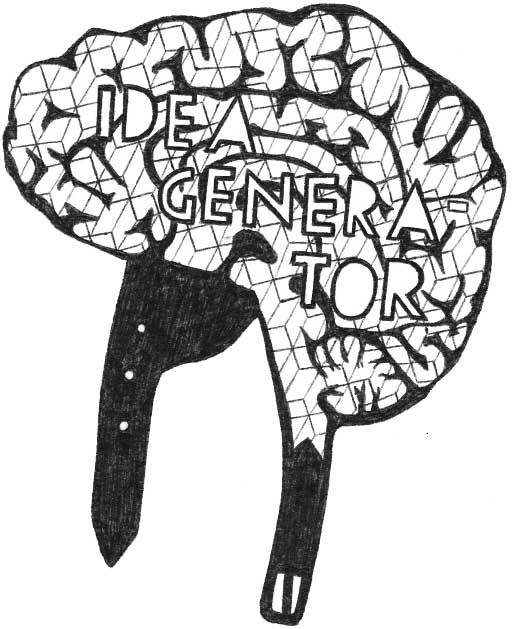
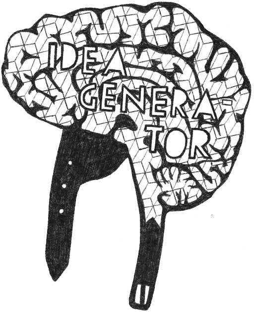

 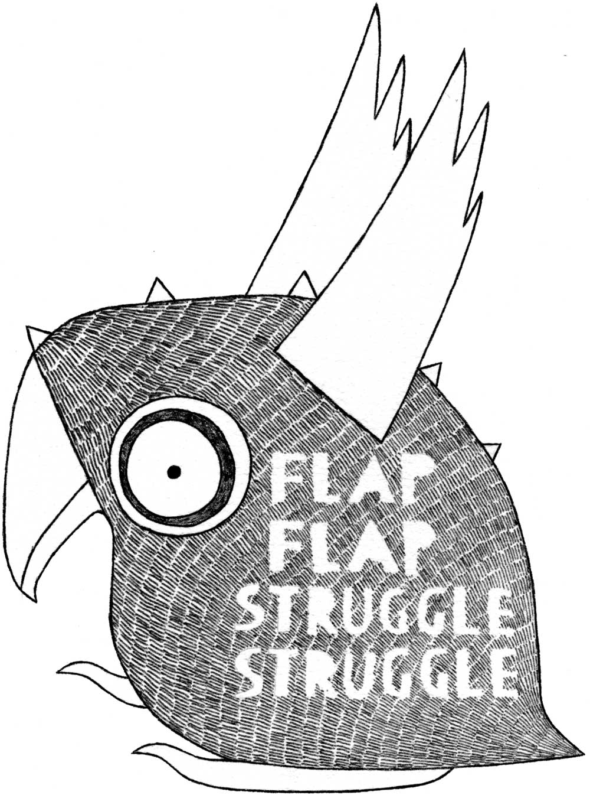
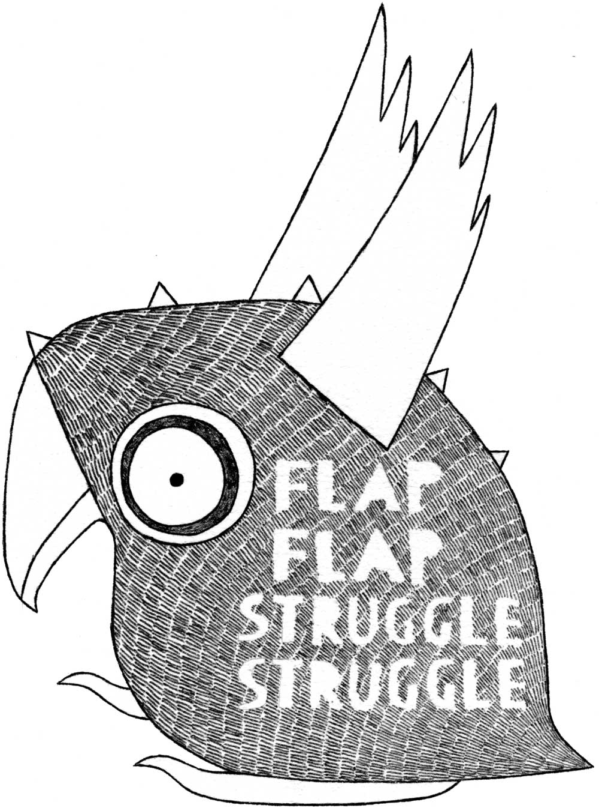

 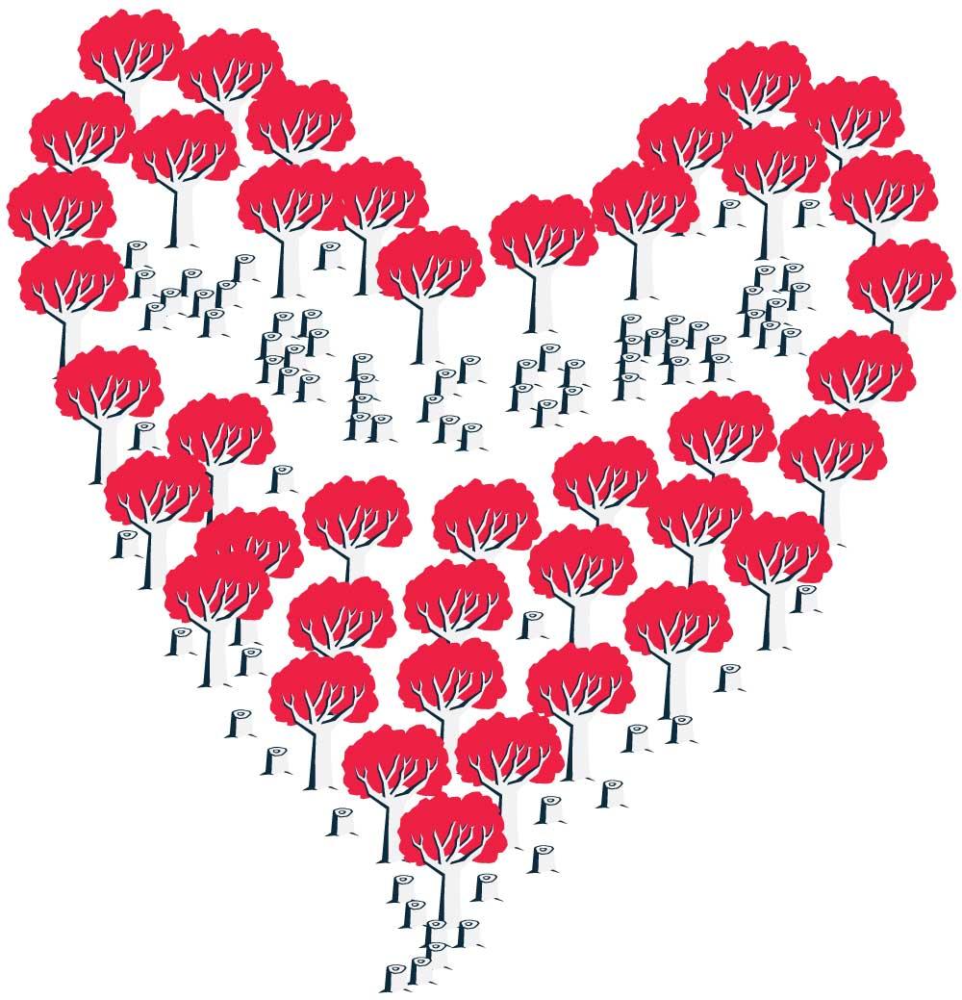
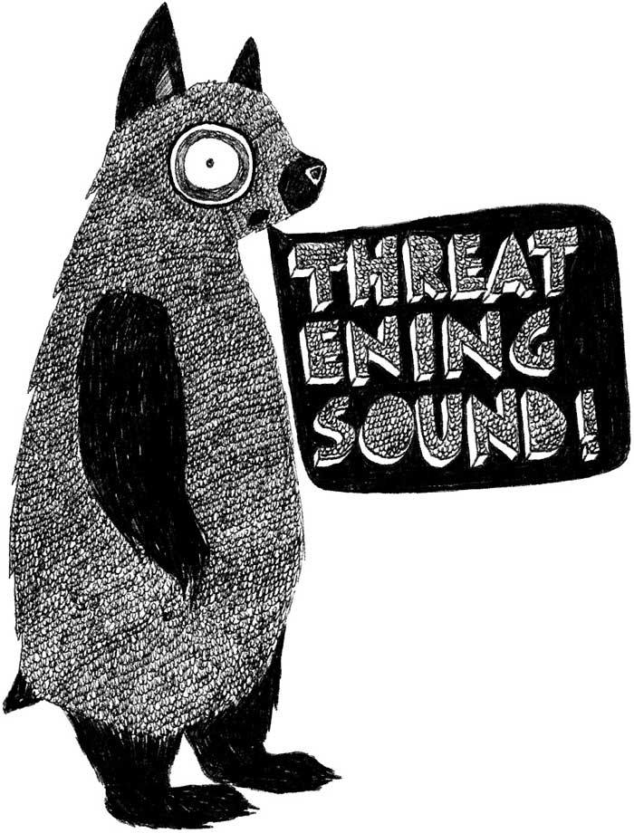
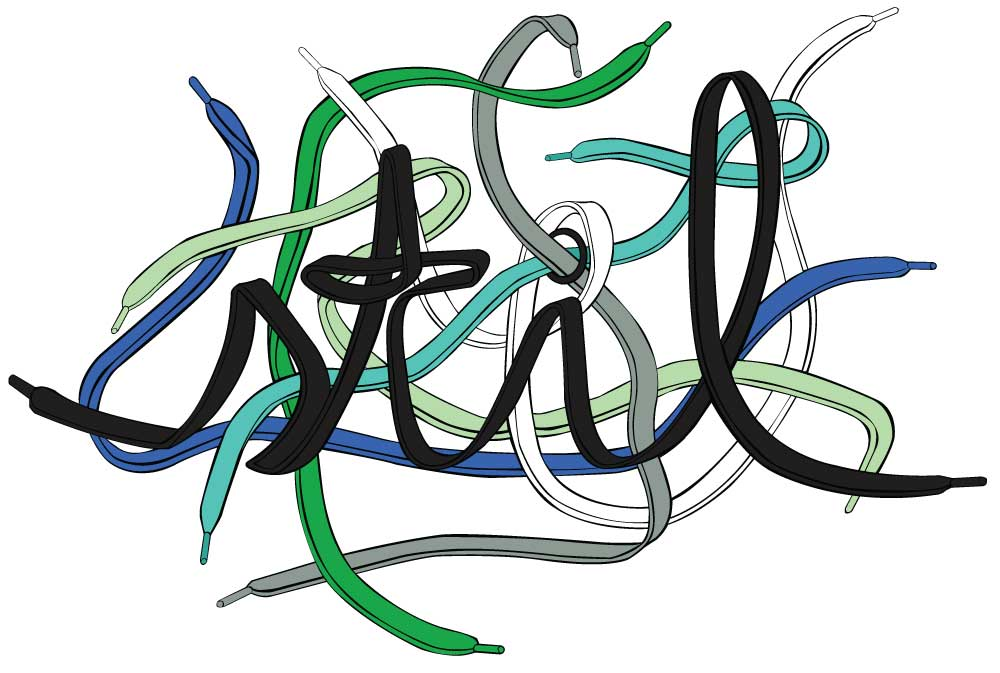
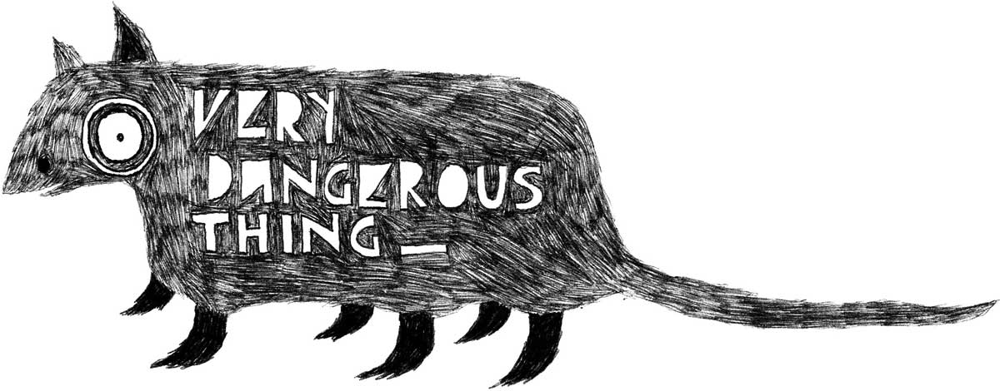
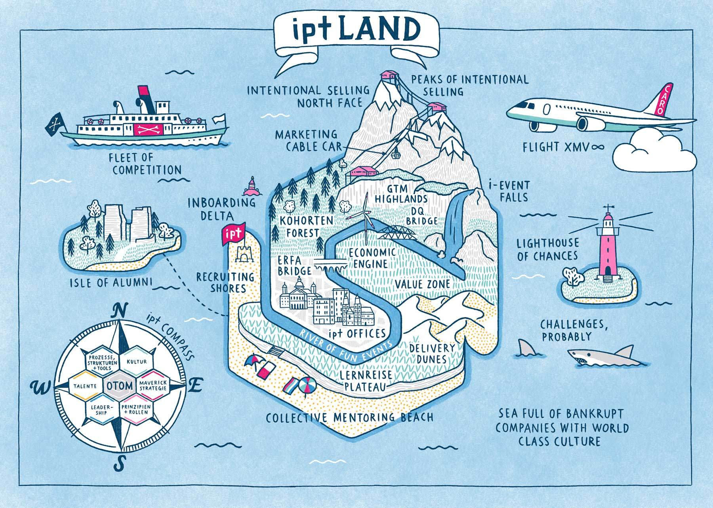
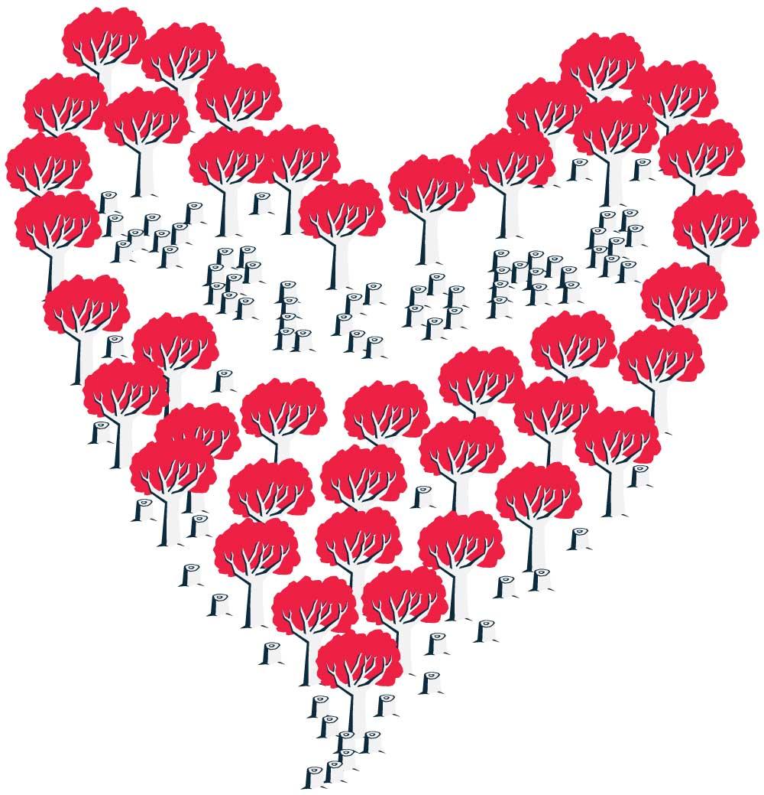
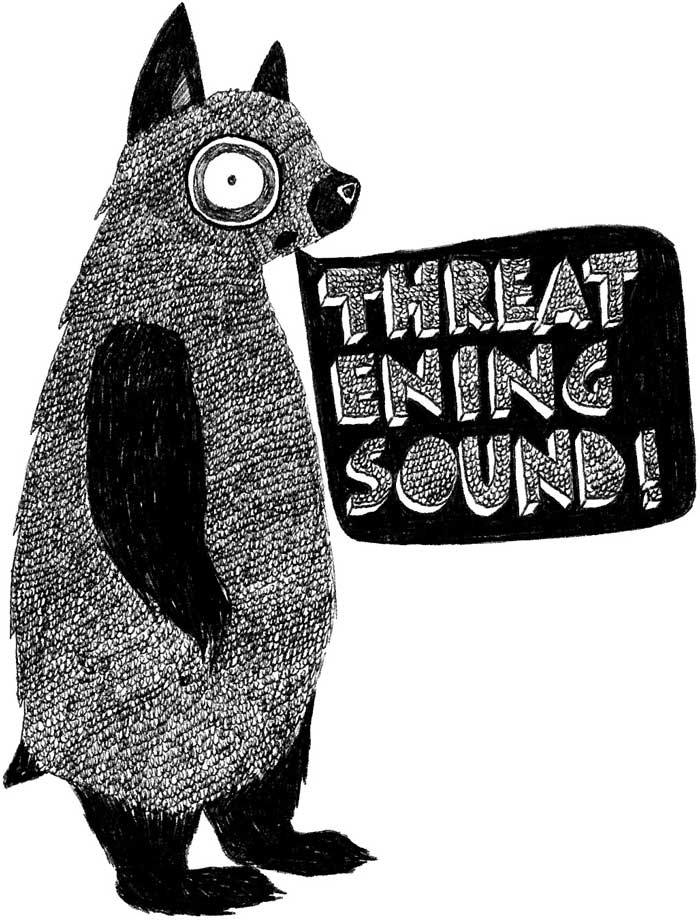
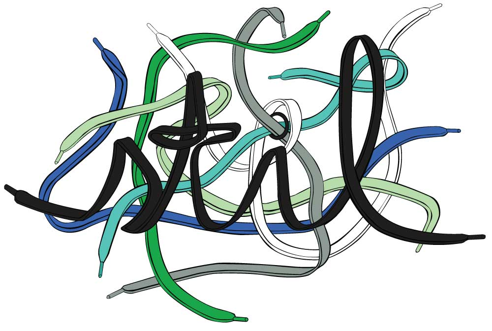
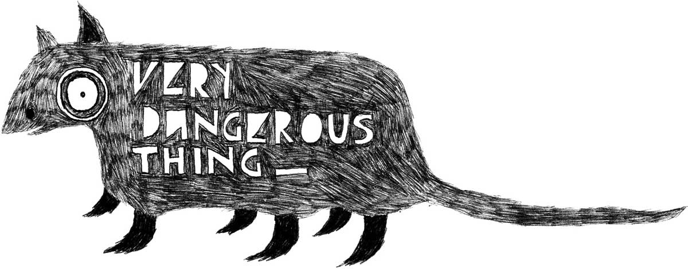
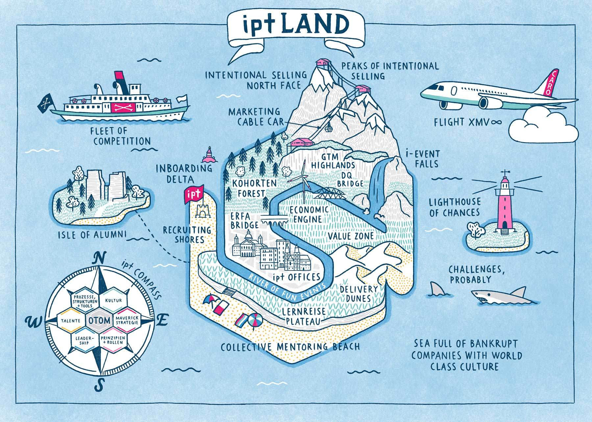